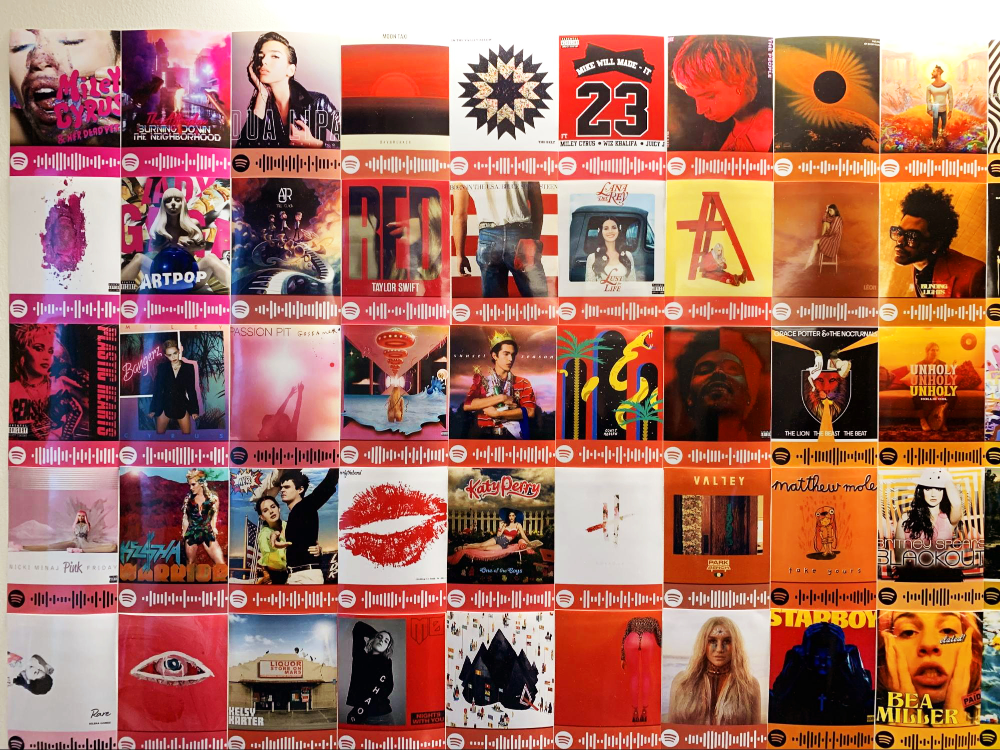
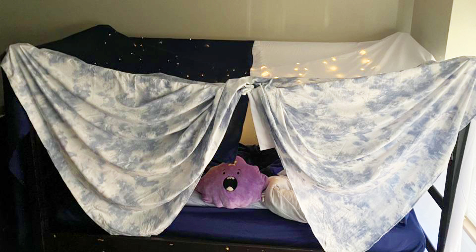
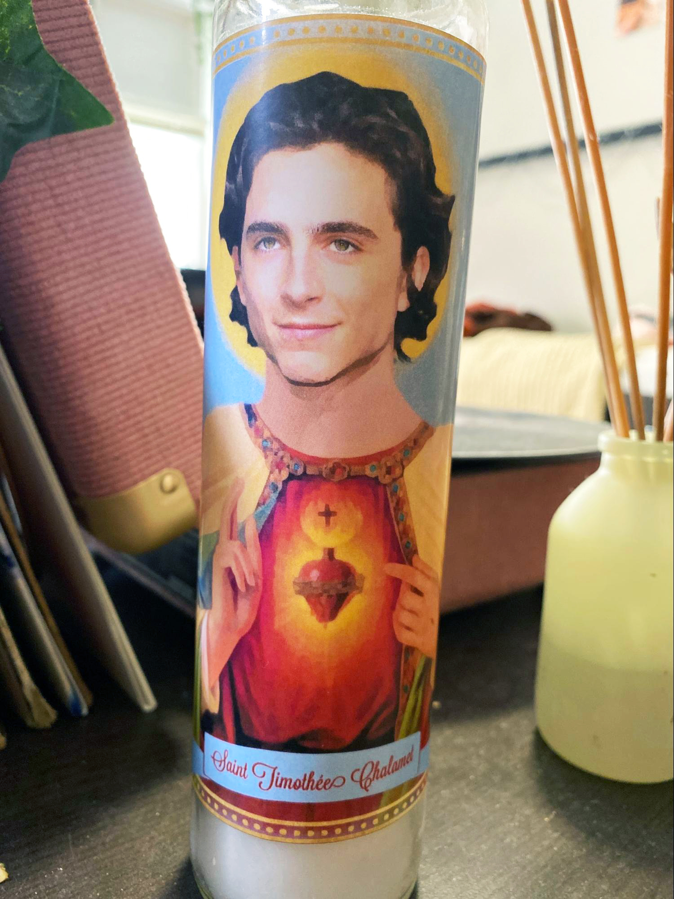

From fairy lights to plastic ivy to pictures from home, dorms at Northwestern University have their fair share of decorative staples. But some students have moved beyond the ordinary collection of items by buying (or making) unique conversation pieces to display. From an in-dorm cinema fort to a poster of Kim Jong-un, these are the stories behind seven Northwestern first-years’ unconventional dorm decorations.
Item: Spotify Poster
Owner: Ben Lankfer, Weinberg first-year
Dorm: 560 Lincoln St.

Stretching across the wall of Weinberg first-year Ben Lankfer’s 560
Lincoln St. dorm room is an eye-catching rainbow collage. The
collage is composed of 125 handpicked album covers from a vari- ety
of artists, and each image is paired with the Spotify scan code of a
corresponding song.
After seeing other Spotify code projects on TikTok, Lankfer says he
was inspired to create a display using his own favorite songs. Pop
artists dominate the wall, with Miley Cyrus and Taylor Swift as
standouts.
Lankfer says the poster is a particularly personal decoration.
“It’s not just a bunch of album art,” Lankfer says. “It’s something
special to me and not something that everyone has.”
Item: Dorm Cinema Fort
Owner: Nozizwe Msipa, Communication first-year
Dorm: Allison Hall

What do you get when you combine an empty dorm bed with extra
sheets? An in-dorm cinema fort, according to Communication
first-year Nozizwe Msipa.
Msipa, who lives in an Allison Hall double-turned-single,
transformed her room’s unused bed into any child’s dream fort,
complete with fairy lights and an Adventure Time Lumpy Space
Princess plush.
“I had two beds and lots of sheets, and I was just struck by
inspiration,” Msipa says. “There was nothing telling me no.”
Since she uses the fort on most days to watch movies, Msipa says she
plans to keep the fort up for the rest of the quarter and will
continue to order more pillows and lights to beautify her personal
hideaway.
Item: Bowling Ball
Owner: Leah Ryzenman, SESP first-year
Dorm: Ayers Hall

Lined up against the back of SESP first-year Leah Ryzenman’s room in
Ayers Hall are two nightstands, a fridge and… a bowling ball?
Neither Ryzenman nor her roommate bowl, but on a trip to Goodwill,
Ryzenman’s roommate decided to add an uncommon decoration to their
dorm.
The white, blue and black marbled ball always intrigues visitors.
When people ask why she keeps it in her dorm, Ryzenman typically
responds with a simple reply: “Why not?”
Item: Kim Jong-Un Flag
Owner: Hank Yang, Medill first-year
Dorm: South Mid-Quads

Strolling past the front of South Mid-Quads at night, you might spot
a smiling face peeking through the window: the face of North Korean
dictator Kim Jong-un. Kim stands in front of an ocean, beside curvy
lettering that reads “Live, Laugh, Love.”
This curious image is featured on a flag owned by Medill first-year
Hank Yang, who received it as a birthday gift in January. Yang says
his side of the room used to be pretty bare, but now the decorative
flag takes up plenty of wall space.
Yang’s roommate, Weinberg first-year George Graham, has adjusted to
the flag.
“Every morning I wake up and see Kim Jong-un’s wonderful smile,”
Graham says.
Item: Timothée Chalamet Jesus Candle
Owner: Catherine Duncan, Medill first-year
Dorm: Allison Hall

A Sacred Heart of Jesus Candle? Nope. In place of Jesus’ head is the
chiseled face of actor Timothée Chalamet.
For Medill first-year Catherine Duncan, what started as an inside
joke between her and a hometown friend about their mutual love of
Chalamet turned into a personal going-away gift that now sits in her
Allison dorm.
“I was surprised that she found it,” Duncan says, “but I wasn’t
surprised that something like this was out there.”
The candle serves as a funny yet meaningful reminder of their
friendship. After all, what’s better than having Timothée Chalamet
within arm’s reach?
Item: Shoehorn Golf Club
Owner: Savir Maskara, Weinberg first-year
Dorm: North Mid-Quads

Shoehorn on one side, golf club on the other. For Weinberg
first-year Savir Maskara, it’s the perfect practical dorm
decoration.
Before leaving for college, Maskara and his friends organized a
“Goodwill Secret Santa,” with each person buying a $5 gift from the
store. Maskara received a shoehorn golf club.
While he admits the golf club head doesn’t serve a purpose in the
dorm room, Maskara uses the shoehorn to put his boots on.
“I have a lot of boots and I’m not very used to putting them on,” he
says. “It’s easier to just use a shoehorn than to yank it up my
leg.”
Maskara conveniently hangs his shoehorn golf club on a hook close to
his closet, so it often sparks inquiries from guests.
Item: Calvin the Blowup Condom
Owner: Emily Lester, SESP first-year
Dorm: 1838 Chicago

A product of a particularly stressful week of college combined with
an unused box of condoms, Calvin sits on the window ledge of SESP
first-year Emily Lester’s dorm room.
After her roommate, McCormick first-year Hannah Rabenhorst, found
the condoms in her drawer, the two blew them into balloons, danced
around with them and put a face on one, naming it Calvin.
Lester originally displayed Calvin in her room, but after realizing
he was in her Zoom back- ground, she relocated him out of frame.
Always sporting a smile, Calvin has a clear view of the Weber Arch
from his window abode, Lester says.